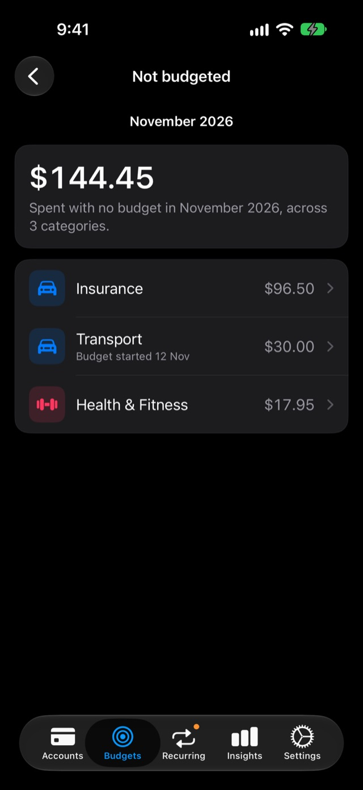
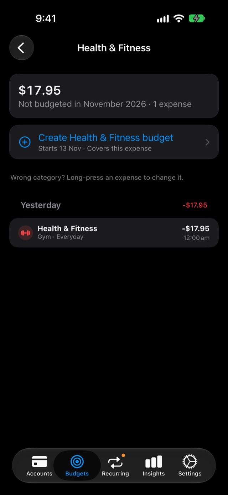
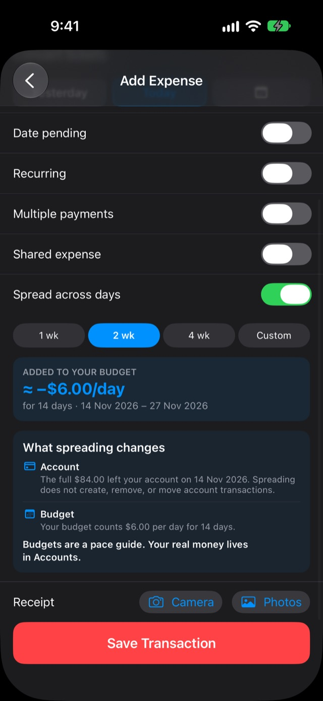
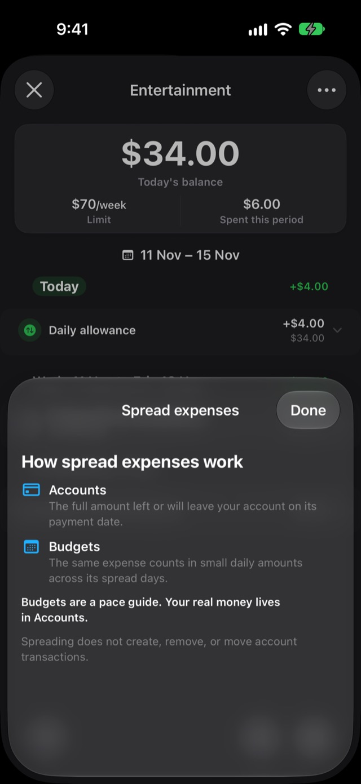
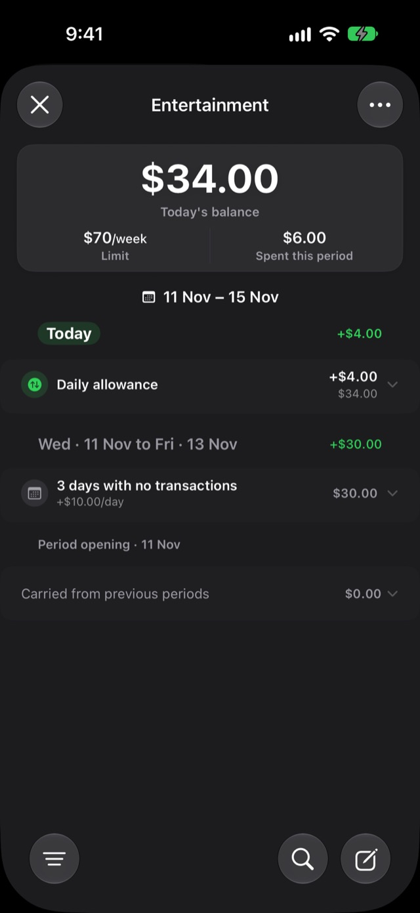

Find spending with no budget, and spread a big expense
Two things can make a budget feel wrong: spending that no budget is watching, and one large purchase landing on a single day. BudgetDaily has an answer for each.
Step by step
One screen at a time
Tap Not budgeted
At the bottom of the Budgets list, Not budgeted shows how much you spent this month in categories that no budget covers.

See which categories
Each category is listed with its total. A note such as Budget started 12 Nov means the spending happened before that budget began.

Open a category
You see the expenses behind the total. If this is spending you want to keep an eye on, tap Create budget to start one that covers it.
If an expense is simply in the wrong category, press and hold it to change it.

Spread a large expense
When you record something that covers more than one day, such as tickets or a big shop, press and hold the category to open the full form and switch on Spread across days.
Choose 1, 2 or 4 weeks, or a custom range. The form shows what will be counted per day.

What spreading does and does not do
The full amount still leaves your account on the day you paid. Only the budget treats it as a small amount each day.

Your budget stays readable
Today's balance drops by one day's share instead of the whole purchase, so one large cost does not put you in the red for weeks.



What to do next
Related tips and guides
Not everything needs a budget. Fixed costs such as insurance are fine left in Not budgeted.
Bills that repeat pace themselves. See Set up bills and confirm them when due.
New to the numbers? Read Today's balance explains the Budgets tab.